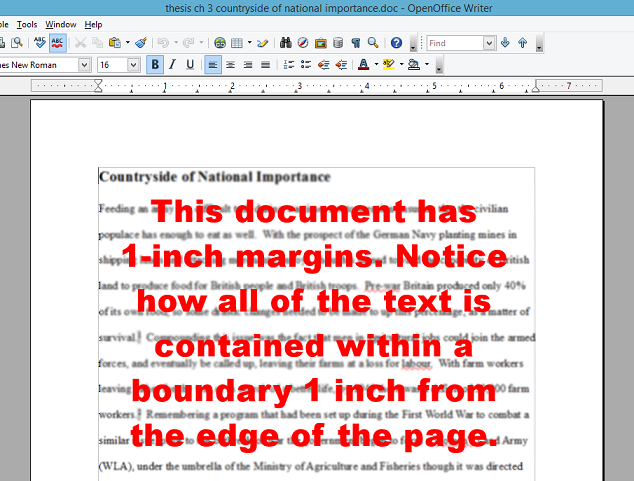
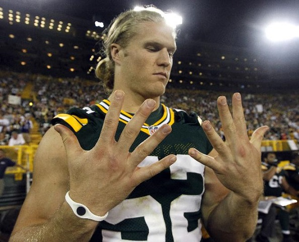
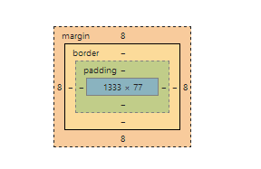

Keep Calm and Give Me Space
All about margins, borders, and padding.
Margins
Margins are perhaps the easiest to understand because most people have at least seen them with word processing software. Just like when you're typing a document, when you're making a webpage you use margins to dictate how far away from the edge of the page you want your element to be. However with a webpage margins can also be used to extend space outside of an element without making that element bigger. This is almost true with a text document as adding margins doesn't make the text any bigger, but just adds space around its borders.
Borders
Borders in CSS are also similar to their non-CSS counterparts. They are used to create a boundary around something, and that boundary can take many forms. It can be a basic line, thin or thick. It can be a colorful line, a dotted line, a rounded line, or even a basic image. It doesn't even have to go all the way around the element, such as in the case below. Each navigation link is followed by a one pixel wide border on the right.
Padding
Padding probably causes the most confusion of the three. It falls within the boundary (or border) of an element, and pushes the element outwards. It's somewhat similar to a football player's pads. When a football player puts them on beneath their jersey (well the jersey goes on afterwards), it pushes the jersey out and makes them appear bigger. Take a look at the images below. The first one is a football player without padding. The second is the same guy with padding. While he's big to begin with, notice how much bigger he is with padding. This is the same with a web page. Padding incorporates the background color or style of an element and makes the whole thing appear bigger and pushes everything out around it.
What Now?
In the end, your site will have a diagram that roughly looks like the following. This particular diagram is specific to this page, so yours will likely look different. Depending on what you choose to do with your site, you will likely have individual elements with their own margins, borders, and padding as well.
